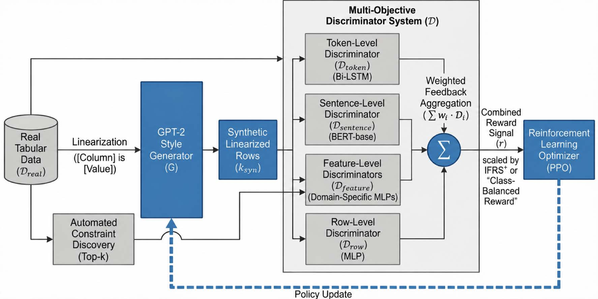
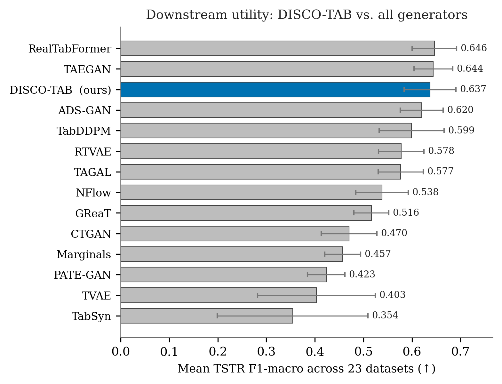
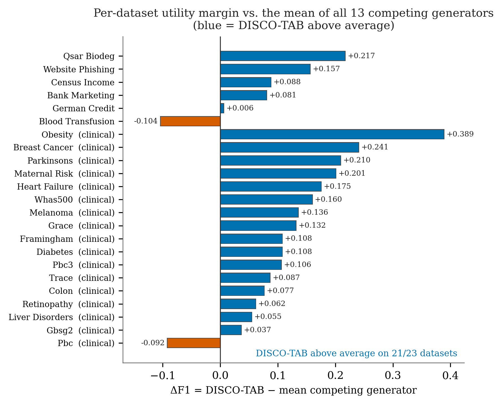
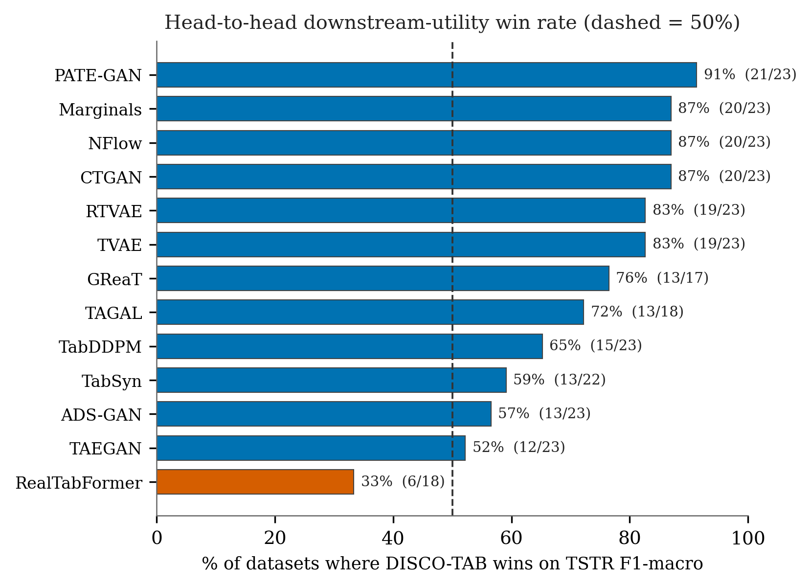
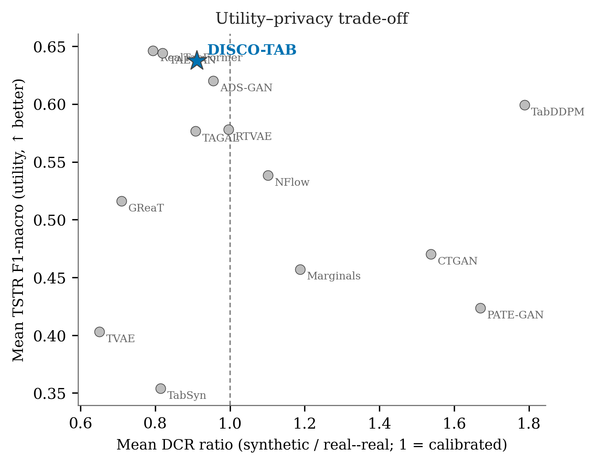
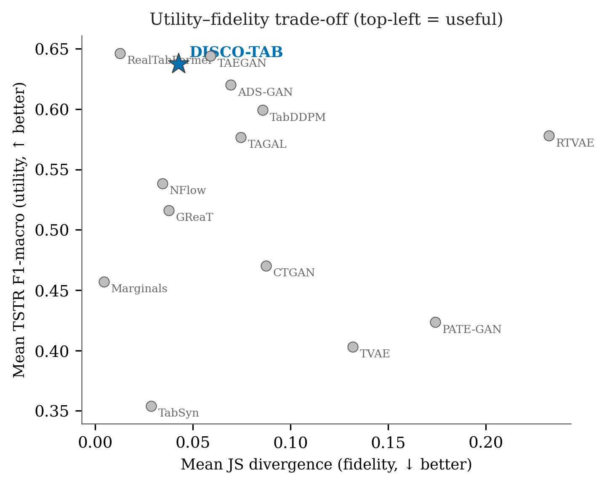
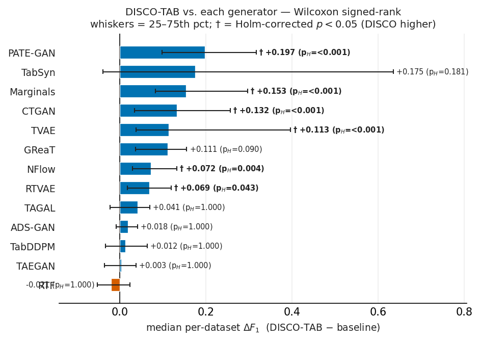
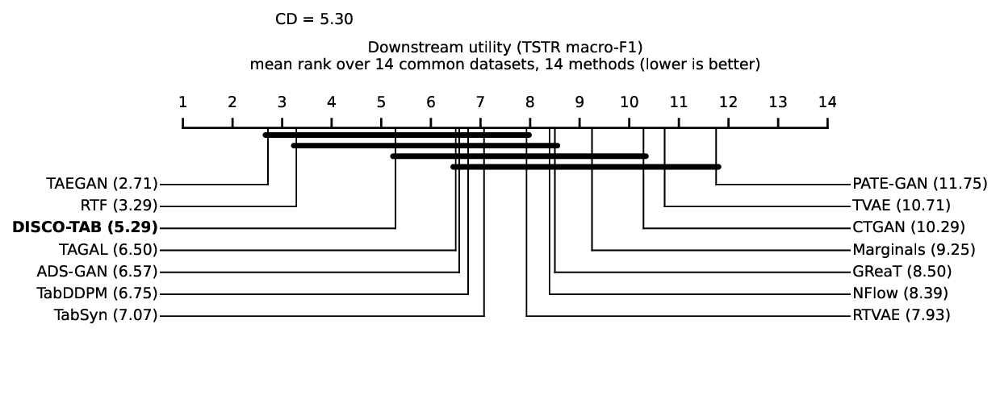
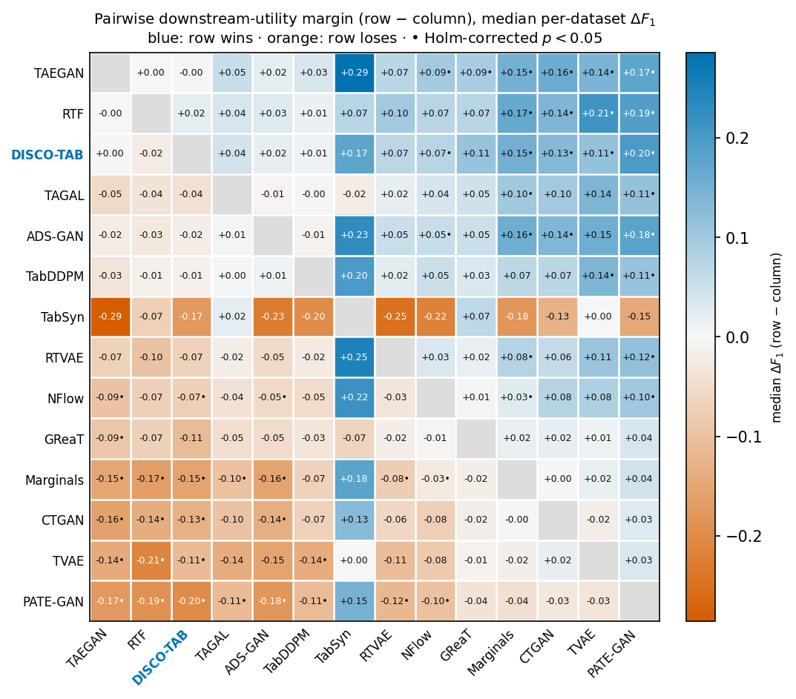

A hierarchical reinforcement-learning framework that fine-tunes an LLM generator with feedback at four granularities — token, sentence, feature, and row — for high-fidelity, utility-preserving synthetic clinical data.
1Computational Science Research Center, San Diego State University · 2School of Nursing & Dept. of Computer Science, UC Irvine · 3Fowler College of Business, San Diego State University · 4Dept. of Computer Science, San Diego State University
*Corresponding author — ailaty@uci.edu
Abstract
Robust clinical decision support is impeded by the scarcity of high-fidelity biomedical data that can be shared with limited disclosure risk. LLMs are a promising route to synthetic data, yet they struggle with the non-linear dependencies and severe class imbalance of electronic health records.
We introduce DISCO-TAB (DIScriminator-guided COntrol for TABular synthesis), which couples a fine-tuned LLM generator with a reinforcement-learning objective shaped by a hierarchy of discriminators. Instead of a single scalar signal, the generator receives feedback at four granularities — token, sentence, feature, and row — combined with automated constraint discovery and inverse-frequency reward shaping that protects minority classes. Across a 23-dataset benchmark spanning clinical, financial, chemical, and web domains and 21 metrics, DISCO-TAB attains top-tier downstream utility among full-coverage generators and leads that field on correlation preservation, while maintaining a calibrated disclosure-risk profile — keeping the distance to the closest real record near the real–real baseline rather than inflating it with noise.
How it works

[column] is [value]) and generated by a GPT-2-style policy. A multi-objective discriminator system scores each synthetic row at four granularities — token (Bi-LSTM), sentence (BERT), feature (domain-specific MLPs, guided by automated top-k constraint discovery), and row (MLP). Their weighted aggregation forms a combined reward, scaled by inverse-frequency / class-balanced shaping, that drives a PPO policy update.Results at a glance
Benchmark & statistics








Citation
@article{ilaty2026discotab,
title = {DISCO-TAB: A Hierarchical Reinforcement Learning Framework
for Clinically Constrained Tabular Data Synthesis},
author = {Ilaty, Arshia and Shirazi, Hossein and
Rahmani, Amir M. and Homayouni, Hajar},
journal = {IEEE Journal of Biomedical and Health Informatics (under review)},
year = {2026}
}